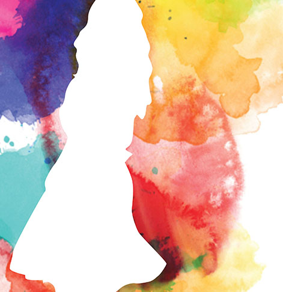

Identity
This one was supposed to be a representation of ourselves. I wanted to show that I exist in a life with many influences, but stand strong in my own opinions and thoughts. Cheesy, I know.I used photoshop to cut out an image of myself and place it over a watercolor I found.